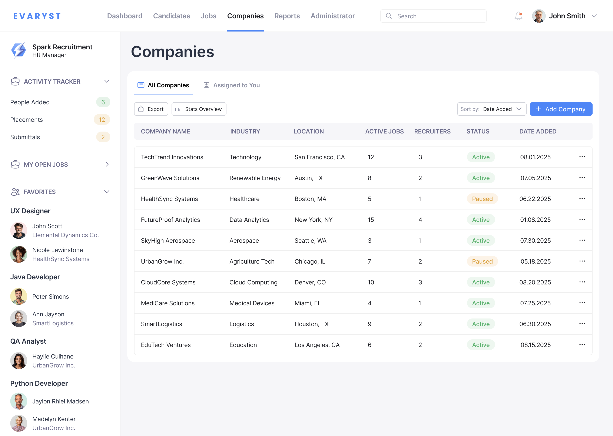
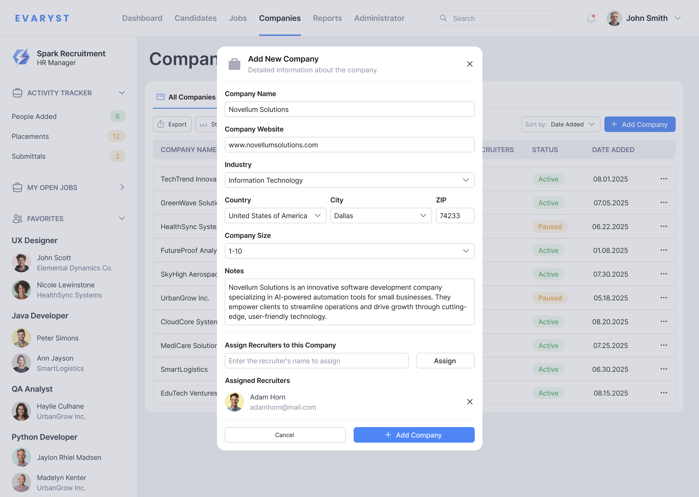
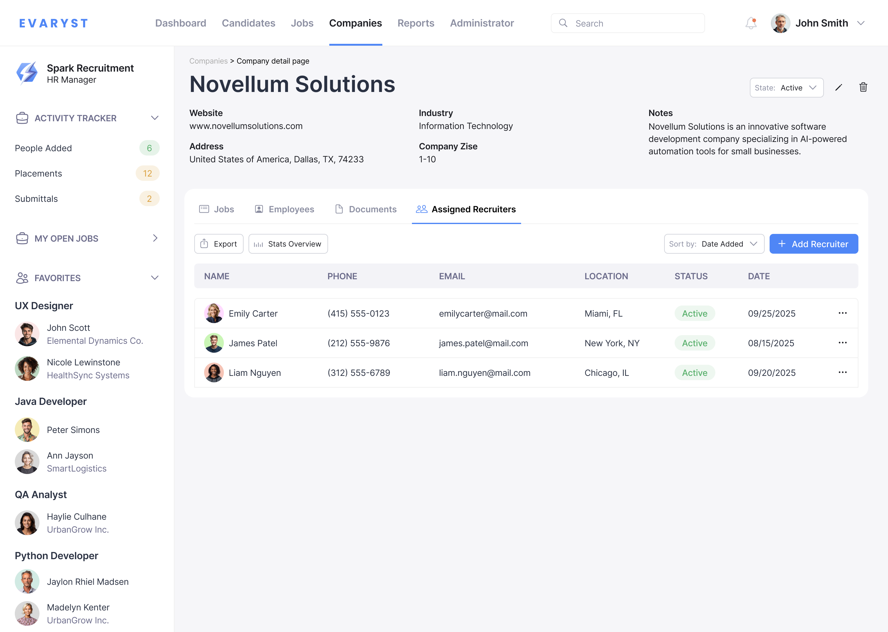
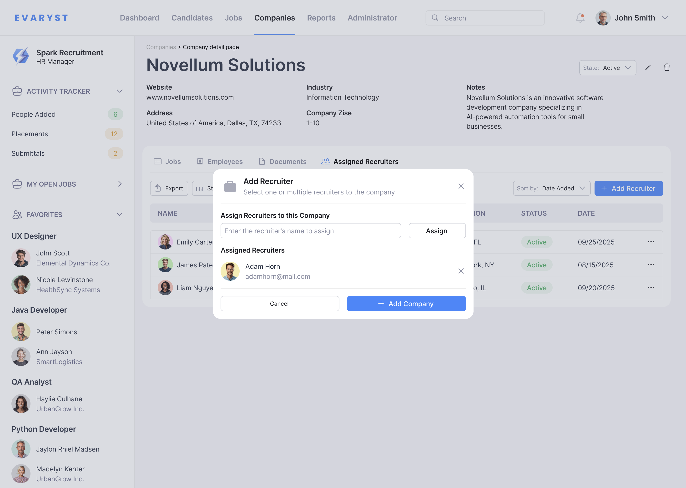
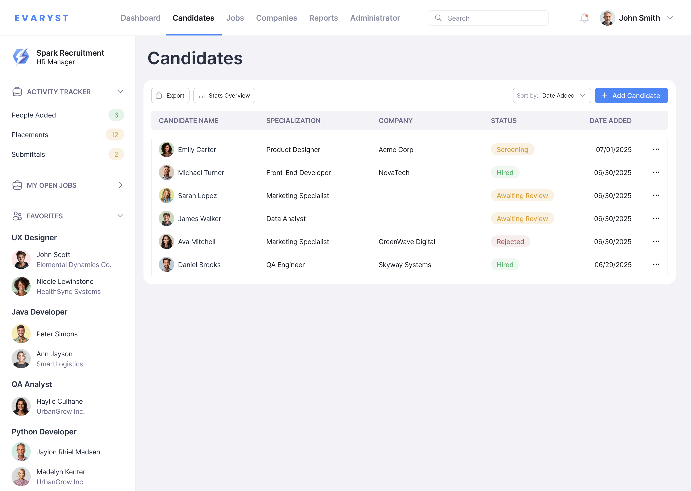
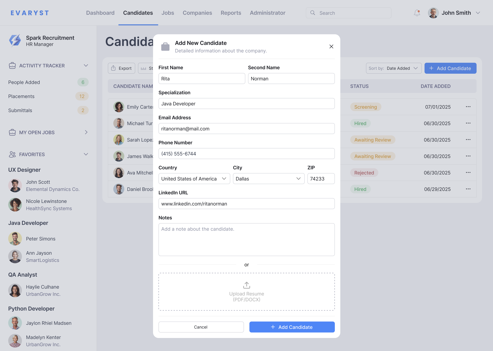

Redesigning the core workflows of an applicant tracking system — helping recruiting teams manage accounts, balance workloads, and capture candidates faster.
Recruiters had no central system — accounts, workloads, and candidates were managed across disconnected tools.
The result: teams lost visibility into who owned which account, work got duplicated, and the hiring pipeline slowed down at every stage.
Redesigned two core ATS workflows that directly affect team speed and clarity:
Create accounts and assign them to the right recruiters
Add candidates via manual entry or resume import
Create and assign companies to recruiters — giving the team clear ownership over accounts and control over who manages what.




Add new candidates to the pipeline — quickly, through manual entry or resume import, keeping the hiring funnel complete.


Clearer team accountability — managers can see who owns what account and rebalance workloads in seconds
Faster candidate intake — resume import cut manual data entry significantly
Overall system usability improved based on internal team testing and feedback
Building from scratch with no legacy user data.
We validated every decision using the Jobs to Be Done framework, insights from our internal recruiting team, and competitive analysis of established tools like Greenhouse. JTBD kept us grounded in real recruiter needs rather than internal assumptions.